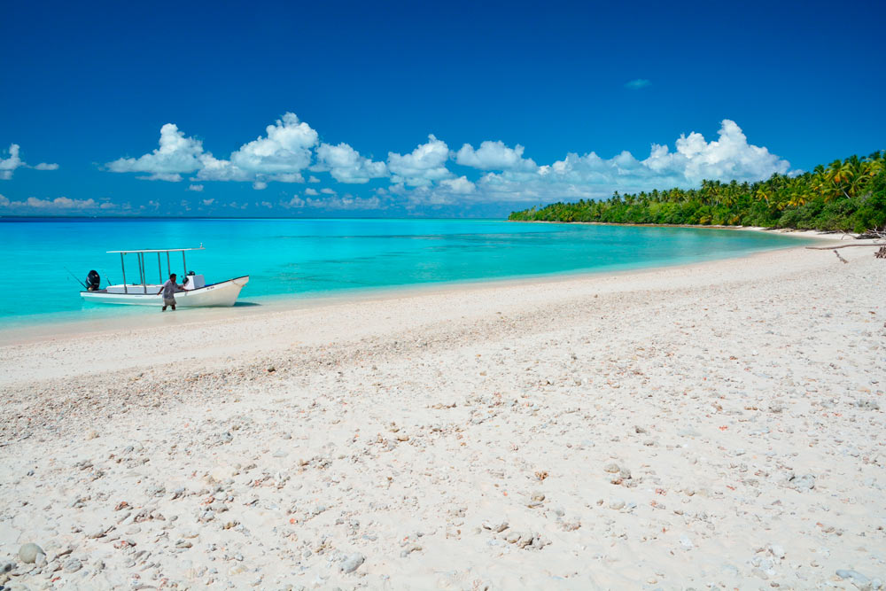

-
What to do in Kiribati?
Here are some ideas!
-

What to do in Kiribati?
Here are some ideas!
Fishing
Are you up for some fishing adventure in one of the best fishing locations in the world? Whether you prefer the deep blue waters with the big game fish, or the crystalline shallow water saltwater fly fishing with the bonefish and giant trevally, Kiribati is that fishing holiday destination for you that won't disappoint. Kiribati boasts 3 fishing destinations where you can get that great fishing experience and that fishing holiday that you've always planned for. From Kiritimati Island and Fanning Island in the Line Islands, to Tarawa and the Gilbert Islands, and Kanton Atoll in the Phoenix Islands Protected Area are 3 destinations that you can choose from to spend that fishing holiday.
Surfing
Big and long breaks off Fanning and Kiritimati (Christmas) islands, the final frontier – where “lack of crowds” is a complete understatement, you will be lucky if anyone else is out with you. This is the beauty of the isolation of the central pacific. Of course this exclusiveness is because these places can be a little challenging to get to – however you are in the right place to find out. Only for the truly adventurous surf traveler, below are the details you will need to arrange your surf trip of a life time, and waves you have only dreams about.
Exploring
Kiribati is open to attracting small to medium scale cruises such as Adventure Cruises, Expedition cruises and Ocean Cruises who would like to explore our islands, our culture, our marine life and enjoy our shore excursion activities: Fanning Island and Kiritimati Island (in the Northern Line Islands); Islands in the Southern Line group; Kanton in the Phoenix Islands Protected Area (PIPA); and Butaritari Island and Abemama Island (in the Gilbert Islands) are popular cruise ship destination stops where passengers get to enjoy shore excursion activities – by getting a glimpse of the Kiribati people and the cultural entertainment, buy souvenirs, sightseeing tours, sunbathe on pristine white beaches, swimming, scuba diving, surfing, snorkeling and game fly-fishing are the popular activities passengers will get to engage in.
Connecting
To experience our culture and lifestyle will be a memory you will have for the rest of your life. The culture of Kiribati is complex and diverse, with each island having its own unique ways. Though a living body, many people remain true to the century old traditions and practices that define what it means to be I-Kiribati. Cultural practices such as community meetings under the maneaba (traditional meeting house) to socialize and feast (a botaki), respect of elderly people, guest hospitality and importance of family remain important facets in the culture of Kiribati. We warmly welcome visitors in many of our customs and activities, and are proud of our way of life and its celebration. The way of living is very simple and people plan their living for a day only, without worrying about their future, living with the moto “Tomorrow is another day”.